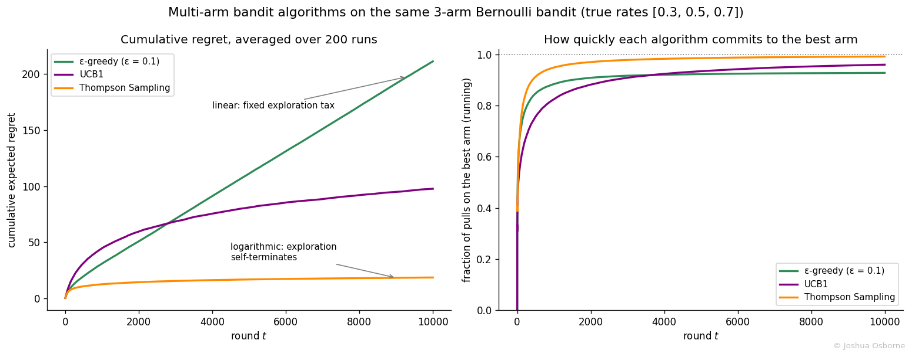

Statistics Notes
The explore/exploit tradeoff: regret decomposition, growth rates, and a comparison of the three classic strategies.
Contents
The multi-arm bandit is the problem of repeatedly choosing among options with unknown reward rates so as to earn as much as possible while still learning which option is best, and every bandit algorithm is a different answer to the explore/exploit tradeoff.
The name comes from casino slot machines (“one-armed bandits”). Imagine facing \(K\) machines, each paying out with a different unknown probability. Every coin spent on a machine does double duty: it earns (or loses) money, and it reveals information about that machine. Spend too many coins probing bad machines and you waste money; commit too early to the machine that looks best and you may have crowned the wrong one.
This structure appears anywhere decisions repeat and feedback is immediate: choosing which headline to show, which email subject line to send, which ad creative to serve, which recommendation to surface, which treatment dose to assign in an adaptive clinical trial. It is also the conceptual bridge between A/B testing (pure exploration first, pure exploitation after) and reinforcement learning (bandits are reinforcement learning with a single state).
The three classic solution strategies each get their own note:
Epsilon greedy algorithm: explore by coin flip
Upper Confidence Bound: explore by optimism, using confidence intervals
Thompson sampling: explore by sampling from a Bayesian posterior
A stochastic bandit has \(K\) arms. Arm \(i\) has a fixed but unknown reward distribution with mean \(\mu_i\); here rewards are Bernoulli (success/failure). At each round \(t = 1, \dots, T\) the algorithm picks one arm \(a_t\), observes only that arm’s reward, and updates its beliefs. Nothing is observed about the arms not pulled (this partial feedback is what makes bandits harder than supervised learning).
The goal is to maximize total expected reward, which is equivalent to minimizing cumulative regret: the expected shortfall relative to an oracle that knew the best arm from the start and pulled it every round.
| Symbol | Type | Meaning |
|---|---|---|
| \(K\) | integer | number of arms |
| \(T\) | integer | horizon, total number of rounds |
| \(t\) | integer | current round, \(1 \leq t \leq T\) |
| \(\mu_i\) | scalar | true mean reward of arm \(i\), in \([0, 1]\) for Bernoulli arms |
| \(\mu^*\) | scalar | mean of the best arm, \(\max_i \mu_i\) |
| \(\Delta_i\) | scalar | suboptimality gap of arm \(i\), \(\mu^* - \mu_i \geq 0\) |
| \(a_t\) | random variable | index of the arm pulled at round \(t\) |
| \(\mu_{a_t}\) | scalar | true mean of the arm pulled at round \(t\) |
| \(n_i(T)\) | random variable | number of times arm \(i\) was pulled in the first \(T\) rounds |
| \(R(T)\) | scalar | cumulative expected regret after \(T\) rounds |
| \(E[\cdot]\) | operator | expectation over the algorithm’s randomness and the rewards |
The most useful identity in bandit analysis rewrites regret per arm instead of per round.
Step 1. By definition, regret compares \(T\mu^*\) (the best arm’s expected total reward, known here because we set the true rates in simulation) with the algorithm’s total reward:
\[R(T) = T\mu^* - E\!\left[\sum_{t=1}^{T} \mu_{a_t}\right]\]
Step 2. Regroup the sum over rounds into a sum over arms. Each round contributes \(\mu_{a_t}\), and arm \(i\) is pulled exactly \(n_i(T)\) times, so
\[\sum_{t=1}^{T} \mu_{a_t} = \sum_{i=1}^{K} n_i(T)\,\mu_i\]
Step 3. Every round pulls exactly one arm, so the counts add up to the horizon: \(\sum_i n_i(T) = T\). Use this to rewrite the best arm’s expected total reward term as a sum over arms too:
\[T\mu^* = \sum_{i=1}^{K} n_i(T)\,\mu^*\]
Step 4. Subtract Step 2 from Step 3 inside the expectation and factor each arm’s term (This is just linearity of expectation: \(E[c - X] = c - E[X]\) for any constant \(c\)):
\[R(T) = E\!\left[\sum_{i=1}^{K} n_i(T)\,(\mu^* - \mu_i)\right] = \sum_{i=1}^{K} \Delta_i\, E[n_i(T)]\]
How \(R(T)\) grows with \(T\) is the standard way to compare algorithms:
| Strategy | Regret growth | Why |
|---|---|---|
| Pure greedy | linear, \(O(T)\) | can lock onto a wrong arm forever with constant probability |
| Epsilon greedy algorithm, fixed \(\varepsilon\) | linear, at least \(\varepsilon \bar{\Delta} T\) | pays a constant exploration tax every round (derived in that note) |
| Epsilon-greedy, decaying \(\varepsilon_t\) | \(O\big(T^{2/3} (K \log T)^{1/3}\big)\) | tax shrinks over time but the schedule is blind to the data |
| Upper Confidence Bound (UCB1) | \(O(\log T)\) | suboptimal pulls capped at \(\frac{8 \ln T}{\Delta_i^2}\) (derived in that note) |
| Thompson sampling | \(O(\log T)\) | posterior concentrates; matches the optimal constant (Agrawal and Goyal, 2012) |
The regret decomposition makes regret computable by hand. Take the running 3-arm example (true rates \(\mu_1 = 0.3\), \(\mu_2 = 0.5\), \(\mu_3 = 0.7\), so \(\mu^* = 0.7\), \(\Delta_1 = 0.4\), \(\Delta_2 = 0.2\), \(\Delta_3 = 0\)). Suppose after \(T = 100\) rounds an algorithm’s pull counts were:
| Arm | \(n_i(100)\) | \(\Delta_i\) | contribution \(\Delta_i \cdot n_i\) |
|---|---|---|---|
| 1 | 10 | 0.4 | 4.0 |
| 2 | 20 | 0.2 | 4.0 |
| 3 | 70 | 0.0 | 0.0 |
| \(R(100) = 8.0\) |
Cross-check against the round-based definition: the oracle expects \(100 \times 0.7 = 70\) successes; the algorithm expects \(10(0.3) + 20(0.5) + 70(0.7) = 3 + 10 + 49 = 62\). The shortfall is \(70 - 62 = 8\), matching the decomposition exactly.
Note what the table teaches: arm 1 and arm 2 contributed equal regret even though arm 2 was pulled twice as often, because its gap is half as big. Wasting pulls on a nearly-as-good arm is cheap; wasting them on a bad arm is expensive. Good algorithms exploit this by dismissing clearly bad arms quickly and spending their exploration budget on close calls.
All three algorithms face the same dilemma and resolve it
differently. Epsilon-greedy explores blindly (a
coin flip picks any arm uniformly). UCB explores
deterministically by optimism (whichever plausible
best case is highest gets checked). Thompson Sampling explores
randomly in proportion to belief (each arm is
pulled with the probability that it is the best). The consequences
are visible when all three run on the same bandit (script:
python/multi_arm_bandit_comparison.py, 200 runs, 10,000
rounds):

What to look at:
Left: epsilon-greedy’s straight line is the fixed exploration tax; UCB1 and Thompson Sampling both bend toward flat, the signature of \(\log T\) regret
Left: Thompson Sampling dominates here (final regret about 19 vs 98 for UCB1), largely because UCB1’s worst-case-proof confidence intervals are conservative in friendly settings
Right: the running fraction of pulls on the best arm. Thompson Sampling commits fastest and ends near 99%; epsilon-greedy plateaus near 93% forever, its ceiling being \(1 - \varepsilon \frac{K-1}{K}\)
“The bandit problem is about finding the best arm.” Not exactly. That goal is called best-arm identification and is pure exploration. The bandit objective is to earn while learning: an algorithm that identifies the best arm but loses heavily along the way has failed at regret minimization. This is also why weaker arms’ estimates never converge (noted in the Thompson sampling limitations): precision on losers is not worth paying for.
“There is one ranking of the algorithms.” Empirical rankings depend on the horizon, the gaps, the reward distributions, and tuning. Some published comparisons even find epsilon-greedy beating UCB at short horizons (our own UCB note’s figure shows exactly that before round 3,000). What is stable is the asymptotic picture in the scoreboard table, and the practical consensus that Thompson Sampling is the strongest default for Bernoulli-type rewards.
“Bandits replace A/B tests.” They answer different questions. A bandit minimizes regret while deciding; an A/B test buys a clean, unbiased estimate of the effect size with confidence intervals you can defend. Bandit data is adaptively collected, so naive estimates of arm means are biased (arms that got lucky early get pulled more, locking in the luck) and standard test statistics do not apply without correction. Use a bandit when the decision is the deliverable (headlines, creatives, short-lived content); use an A/B test when the measurement is the deliverable (pricing, strategy, anything you must report or defend).
“A bandit shifting traffic early is like peeking at an A/B test.” The comparison is instructive but not equivalent. Peeking breaks a fixed-horizon test’s error guarantees because the test was not designed for sequential decisions. A bandit is designed for sequential decisions from the start; it gives up the fixed-horizon inference guarantees in exchange, rather than silently violating them.
“Rewards must be clicks or conversions.” Any bounded reward works, and extensions handle the rest: contextual bandits condition the choice on user features, sliding-window and discounted variants handle drifting reward rates (the stationarity assumption flagged in the Thompson sampling note), and continuous rewards swap the Beta-Bernoulli machinery for other likelihoods.
Epsilon greedy algorithm: the coin-flip baseline; simplest, linear regret at fixed \(\varepsilon\)
Upper Confidence Bound: optimism via Hoeffding confidence intervals, \(O(\log T)\) guarantee
Thompson sampling: Bayesian posterior sampling, the strongest practical default
What is AB-testing: the fixed-horizon alternative when unbiased measurement matters more than regret
alpha peeking: what goes wrong when fixed-horizon tests are used sequentially without design
confidence intervals: bandit-collected data biases the usual interval constructions
Bernoulli distribution: the binary reward model used throughout these notes
Beta distribution: the conjugate prior that powers Thompson Sampling
Lattimore, T., Szepesvari, C. (2020). Bandit Algorithms. Cambridge University Press.
Slivkins, A. (2019). Introduction to Multi-Armed Bandits. Foundations and Trends in Machine Learning. https://arxiv.org/abs/1904.07272
Bubeck, S., Cesa-Bianchi, N. (2012). Regret Analysis of Stochastic and Nonstochastic Multi-armed Bandit Problems. https://arxiv.org/abs/1204.5721
Lai, T. L., Robbins, H. (1985). Asymptotically Efficient Adaptive Allocation Rules. Advances in Applied Mathematics, 6(1), 4-22.
Agrawal, S., Goyal, N. (2012). Analysis of Thompson Sampling for the Multi-armed Bandit Problem. COLT 2012.
Sutton, R. S., Barto, A. G. (2018). Reinforcement Learning: An Introduction, 2nd ed. MIT Press. Chapter 2.